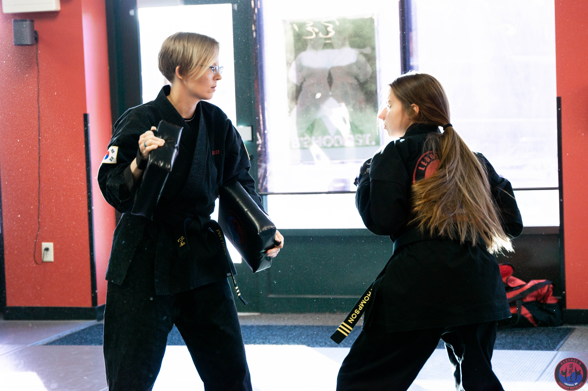
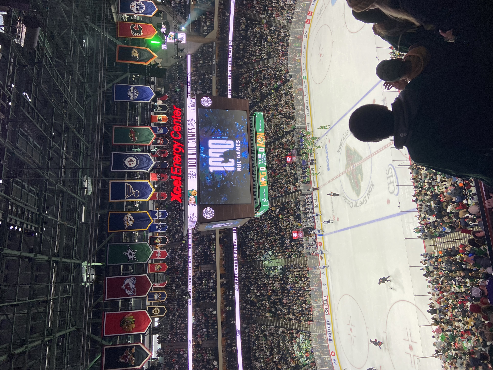

Welcome — I'm Piper Thompson
Hello! I'm a student at the University of Minnesota Duluth. I am majoring in marketing. Check out the rest of my website to learn more about me!

Welcome Video
Hobbies Snapshot
A few things I enjoy outside of my studies and projects.

Karate
What started as a simple Groupon for self-defense classes turned into an 11-year journey that shaped my life. My family committed to earning our black belts, and although I didn’t love karate at first, it grew into my passion. I eventually became an instructor, which built my confidence and became one of my favorite jobs. Even though college took me away, I hope to return—because that one spontaneous decision became one of the most meaningful parts of my life.
Read More
Watching Sports
I started watching hockey with my dad in 6th grade, and learning the players drew me into the sport. After studying the roster, we went to our first NHL game as a family, and my love for hockey grew from there. I’ve followed NHL, college, and PWHL teams, and one of my favorite memories is meeting players and staff at a Minnesota Wild outdoor practice. Hockey means a lot to me not just because I love the game, but because it brought my dad and me closer.
Read More